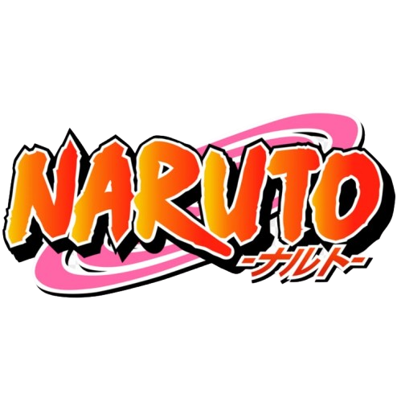

Naruto Uma das obras mais icônicas da cultura pop japonesa, criada por Masashi Kishimoto.
O mangá foi publicado entre 1999 e 2014 na Weekly Shōnen Jump, acumulando 72 volumes, e sua adaptação para anime conquistoumilhões de fãs ao redor do mundo. A história acompanha Naruto Uzumaki, um jovem órfão e rejeitado pela vila onde vive, que sonha em se tornar Hokage, o líder de Konoha, para ganhar reconhecimento e respeito.
Naruto carrega dentro de si a Raposa de Nove Caudas (Kurama), um poderoso demônio selado nele no momento de seu nascimento. Isso fez com que ele fosse temido e evitado pelos moradores da vila. No entanto, em vez de se deixar abalar, Naruto transforma sua solidão em determinação, treinando arduamente e formando laços inquebráveis com seus amigos e mestres.
A obra explora temas como superação, amizade e a busca por identidade.
Ao longo de sua jornada, Naruto enfrenta desafios inimagináveis, confronta vilões poderosos e cresce não apenas como ninja, mas como pessoa. Sua relação com Sasuke Uchiha, inicialmente uma rivalidade, evolui para uma conexão profunda e emocionalmente complexa. Além disso, personagens como Kakashi Hatake, Sakura Haruno, Jiraiya, Hinata Hyuga e muitos outros tornam a narrativa rica e emocionante.
O sucesso de Naruto resultou em uma sequência direta, Boruto: Naruto Next Generations, que acompanha a história de seu filho, além de diversos filmes, jogos e conteúdos extras.
Mesmo anos após seu encerramento, a obra continua sendo uma das mais influentes do mundo dos animes e mangás, marcando gerações e deixando uma mensagem poderosa: nunca desistir dos próprios sonhos.